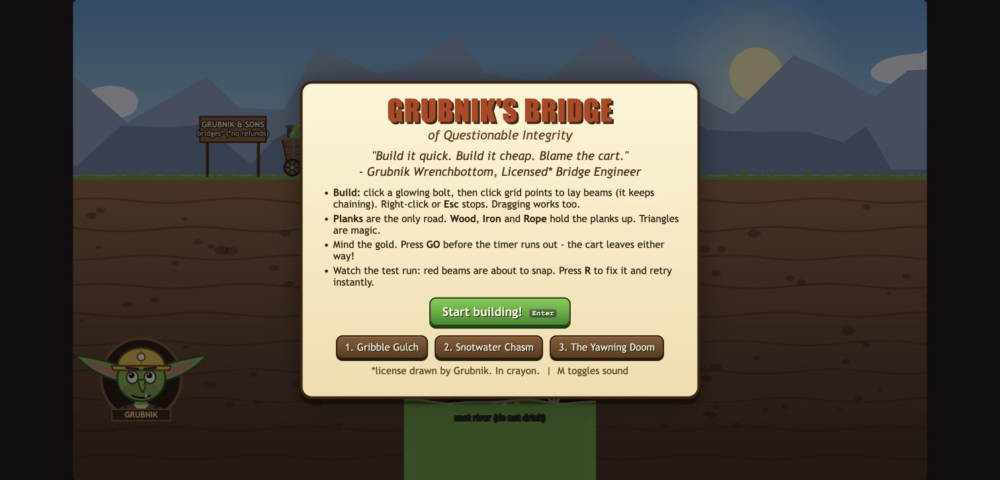
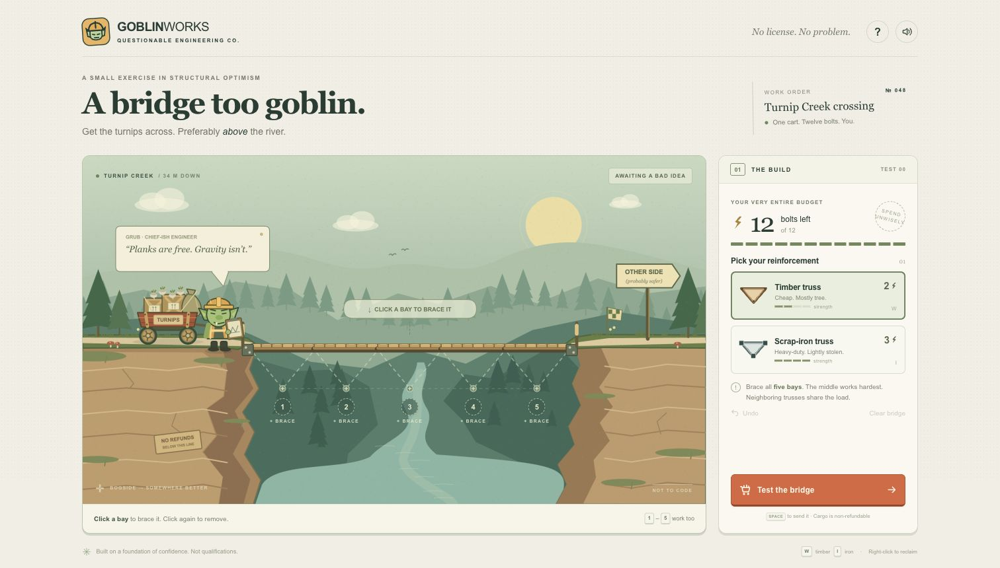
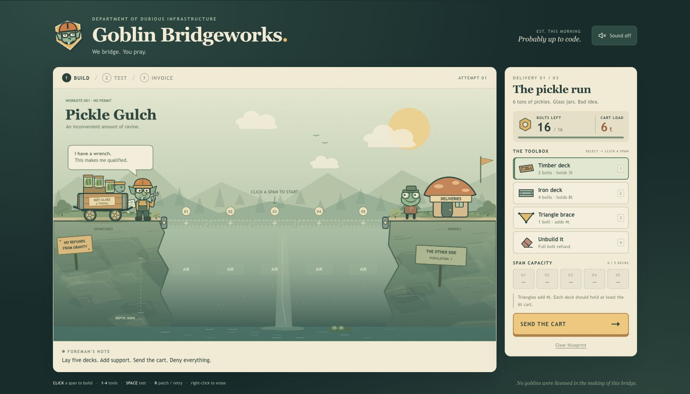
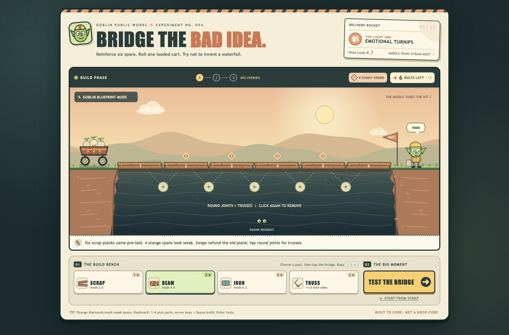

Disposable model test · 30 September 2026
Four models.
One ravine.
GPT-6.1 Sol and GPT-6 Sol got the same job: make a funny bridge game where a goblin must get a loaded cart across.
Both worked. I found both boring. Replacing decks and buying more support left little engineering to do. I gave Astra and Opus 5.5 the same original brief and tools.
Astra adds a small fixed-bay placement puzzle. Opus lets you draw beams and ropes on a grid. In a Chrome check, a cheaper supported bridge crossed while a more expensive design collapsed.

Claude Opus 5.5
Questionable
integrity.
Draw road planks, wood beams, iron girders and ropes on a grid. Each piece has a length limit and a price. Ropes pull; beams carry loads and can break.
All three deliveries crossed in Chrome. A 94-gold bridge with supports underneath held. A 112-gold design above the deck collapsed. The heavier cart broke wood supports, then crossed with iron in the same positions.
Granny and her 40 cats fell with two ropes. Adding two outer ropes got them across. Retry kept the design, refunds worked, and completing the game unlocked a promotion.
Use a desktop. At phone width, the stage is tiny and the page overflows. This is a toy structural simulation; its engineering is not validated and audio quality was not tested. No new fun verdict yet.

GPT-6 Astra
A bridge
too goblin.
Choose timber or iron for five fixed bays. The 12-bolt budget prevents iron everywhere. Adjacent trusses share capacity, and sustained overload breaks a bay.
Chrome checks crossed with one iron truss at the centre for 11 bolts. At the full 12-bolt budget, iron at the two ends failed; moving it to bays 2 and 4 succeeded. Placement matters.
This is a small capacity puzzle. You cannot choose the bridge geometry. Its helpful hint points towards the centre, so the challenge is still limited.

GPT-6.1 Sol
Goblin
Bridgeworks
Lay five decks. Add braces. Send the cart. Each new delivery starts with an empty bridge and a new budget.
Chrome checks completed the pickles, anvils and mayor's statue. Bare timber failed; stronger choices crossed. Retry kept the build, and a new round reset it.
Its saved game works. The model run stopped after two upstream rate limits, before a final handover.

GPT-6 Sol
Bridge the
Bad Idea
Start with six scrap spans. Swap materials with refunds. Trusses strengthen both neighbouring spans. Keep your bridge for the next load.
Keyboard construction completed the turnips, soup and royal anvil. The scrap bridge failed; upgrades crossed. Retry and a new round worked.
Desktop keyboard play was checked. Use 1–4 to select tools, arrows to select a span or joint, Space to build and Enter to test. Mouse and touch construction remain unverified.
A working game can still be boring.
The brief asked for construction choices, a visible crossing, clear results and quick retry. It did not prescribe a view, controls or a physics engine.
The two Sol games chose Canvas 2D and small capacity rules. A brace in 6.1 adds capacity to one span; a truss in 6 supports two neighbours. That difference changes which parts you improve.
All four had the same initial brief, tools, optional Three.js library, max reasoning and a 128,000-token output ceiling. None saw the browser while building. The frozen files were checked in Chrome afterwards, without game repairs or browser hints sent back.
Observed play: both Sol games completed all three deliveries, with failures, retry and fresh-round reset checked. Opus completed all three deliveries after changes to support geometry, materials and rope placement. A more expensive design could still fail. Astra delivered the turnips with two different reinforcement patterns. Its same-cost pass and failure show a positional choice, but the five bays and two materials leave a narrow puzzle. Retry, refunds, keyboard edits and clear worked. No game console errors were captured.
One run per model cannot establish a general winner. The 6.1 run stopped after repeated provider rate limits; the others finished normally. Astra and Sol use capacity rules; Opus models moving loads, joints and rope tension. None is validated engineering. Passing functional checks does not show that they are fun. Astra’s layout fits 390px; Opus’s does not. Real phone hardware and audio quality were not tested.
Total observed OpenRouter charge: $18.0569203 across the four runs. Opus also generated music, effects and voice. The interrupted 6.1 run and different tool use prevent a reliable speed or cost ranking.